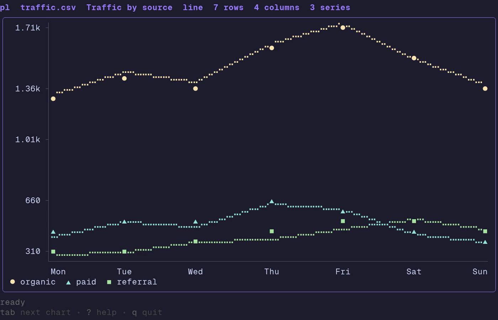
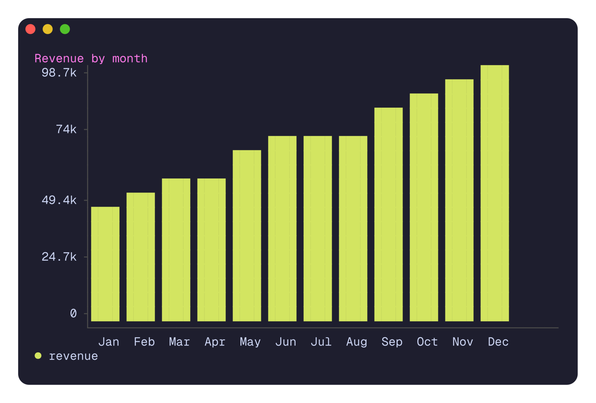
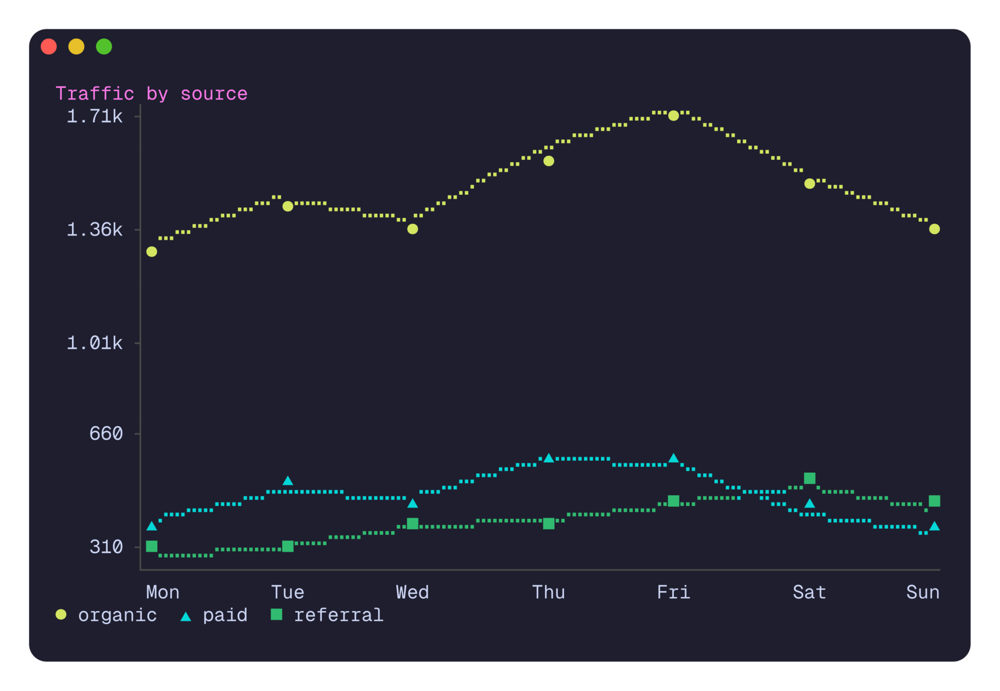
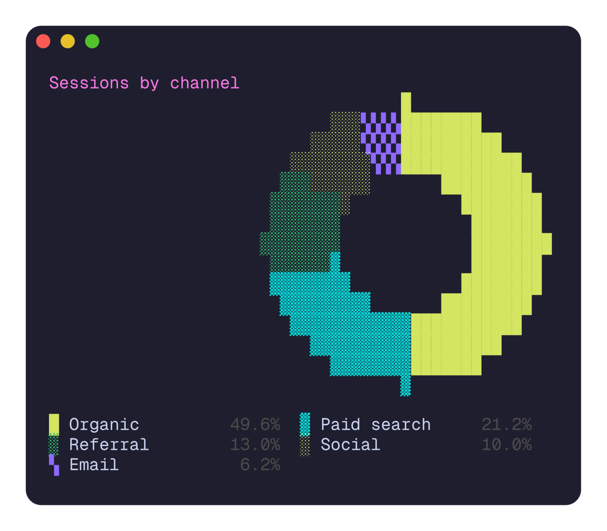
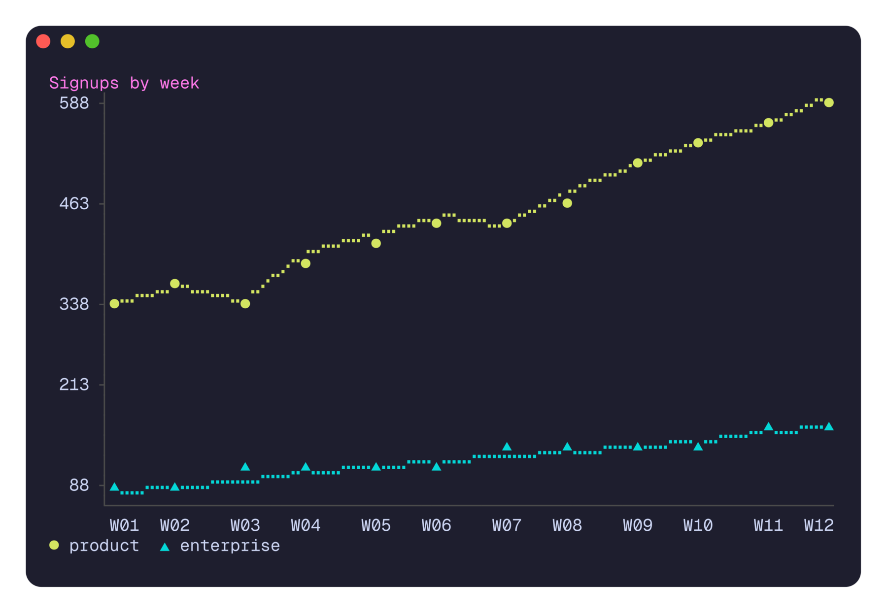

Pipe it in
psql --csv, mysql --batch, cat file.csv or a plain file path. Anything tabular works.
Terminal-native data viz
pl turns pipes, CSVs and SQLite queries into clean charts in milliseconds. One static binary, four chart types, no browser or notebook in the loop.
go install github.com/sazardev/plot/cmd/pl@latest

A browser-side sandbox for the same tables you would feed pl:
CSV, TSV, Markdown, JSON, SQL, Excel and SQLite. Nothing leaves your machine.
Paste a table or drop a file to start.
SQLite and Excel are parsed locally. For PostgreSQL, MySQL or another server, paste the query result here, or run psql --csv into pl in your terminal. A static page cannot open a server connection.
No dashboard to configure, no CSV to upload, no chart library to learn.
If the data can reach your terminal, pl can draw it.
psql --csv, mysql --batch, cat file.csv or a plain file path. Anything tabular works.
Headers, numeric columns, time values, nulls and the best default chart. Override anything with a flag.
A sharp ANSI chart on stdout. Add --tui when you want to explore chart types interactively.
# query → chart, no intermediate file
psql --csv -c "select day, signups from metrics order by day" | pl
# or point pl at a CSV
pl sales.csv --type bar --title "Revenue by month"Everything you need to inspect data in a terminal, and nothing that gets between you and the chart.
Line and bar charts are chosen automatically. Pie and donut are one flag away. Braille lines keep small charts readable.
Run a read-only query with --db and --query. Timeouts, verbatim driver errors and no accidental writes.
Press --tui for a framed, animated view. Cycle charts with tab, open help with ?, quit with q.
stdout carries only the chart. Warnings go to stderr, broken pipes exit quietly, and every failure has a documented exit code.
A cold 10,000-row render lands around 30 ms here. Parsed datasets are cached for warm renders without changing output.
No network egress, no telemetry. The cache lives in your user cache directory with user-only permissions.
Real output from the current binary, captured with color and Unicode glyphs at a normal terminal size.




Twenty-four seconds of the real binary: bar, line, donut and the interactive TUI.
Install it, pipe something into it, and reach for a flag only when you want to override the defaults.
You need Go 1.26 or newer. The binary is pure Go and builds with CGO_ENABLED=0.
$ go install github.com/sazardev/plot/cmd/pl@latest
Make sure $(go env GOPATH)/bin is on your PATH. From a clone, build it yourself:
git clone https://github.com/sazardev/plot.git
cd plot
CGO_ENABLED=0 go build -o pl ./cmd/pl
Give pl tabular text on stdin, a CSV file, or a SQLite query. It infers headers, numeric
columns and a sensible default chart.
# stdin
printf 'day,signups\nMon,3\nTue,5\nWed,4\n' | pl
# one or more files
pl sales.csv
pl january.csv february.csv march.csv
# a PostgreSQL result
psql --csv -c "select day, signups from metrics order by day" | pl--type to choose explicitly.
The CLI is intentionally small: delimited text on stdin or files, plus read-only SQLite. The browser playground on this page accepts a wider set of exports and normalizes them for a chart.
| Where | Accepts | Notes |
|---|---|---|
| CLI | stdin, CSV/TSV/delimited files, SQLite | Multiple files with matching headers are concatenated. |
| Playground | CSV, TSV, Markdown tables, JSON, SQL dumps, SQLite, XLSX/XLS, clipboard | Parsed in your browser; Excel and SQLite stay local. |
| PostgreSQL, MySQL, etc. | Paste the query result or a SQLite-compatible dump | Or use psql --csv -c "..." | pl in a terminal. |
The playground can download a normalized CSV. Copy the generated pl pl-playground.csv
command to reproduce the same data in your terminal.
Four families, one renderer, the same input pipeline:
| Type | Use it for | Notes |
|---|---|---|
line / plot | Trends, time series, several value columns | Braille subcells, up to 8 series, gaps for nulls. |
bar / graph | One categorical series | Vertical bars, positive and negative values, sampled labels. |
pie | Parts of a whole | Explicit only; needs at least two non-zero slices. |
donut | Parts of a whole, with a hollow center | Same rules as pie, with a legend and percentages. |
Pick columns, rename labels, sort, filter and title the chart without touching the source data.
# explicit columns and order
pl sales.csv --label month --columns revenue,cost --type line
# sort and filter before rendering
pl sales.csv --filter 'region=EU' --filter 'revenue>=1000' --sort revenue:desc
# rename is display-only
pl sales.csv --rename revenue=ARR --title "ARR by month"
# ASCII output for CI or a limited terminal
pl sales.csv --ascii --width 72 --height 20
Point --db at a local SQLite file and pass SQL with --query or
--query-file. The source is opened read-only.
pl --db metrics.db --query 'select day, signups from metrics order by day'
pl --db metrics.db --query-file queries/signups.sql --timeout 5s
# environment variables also work
PL_DB=metrics.db PL_QUERY='select * from weekly' pl
--tui requires a real terminal on stdin and stdout. If either side is piped, pl
falls back to CLI mode with one warning.
pl --tui sales.csv
pl --tui --no-motion sales.csv # static first frame
The optional config lives at os.UserConfigDir()/pl/config.toml and is parsed strictly.
Precedence is flag > environment > config > default; paths in the file resolve
relative to the file.
[database]
path = "metrics.db"
query = "select day, signups from metrics order by day"
timeout = "10s"
[display]
color = "auto"
ascii = false
width = 0
height = 0
[cache]
enabled = true
dir = "" # default: os.UserCacheDir()/pl
ttl = "168h"
max_size = "64MiB"
Use --config path.toml or PL_CONFIG=path.toml. Disable the parsed-dataset
cache with --no-cache or PL_CACHE_DISABLE=1.
| Flag | What it does | Default |
|---|---|---|
| Chart | ||
--type | line, bar, pie, donut (aliases plot, graph) | auto |
--label | Label column by name or 1-based position | inferred |
--columns | Value columns, repeatable | all value columns |
--rename | Display rename old=new, repeatable | none |
--title | Chart title | <source> — <type> |
--sort | column[:asc|desc], repeatable | source order |
--filter | column<op>value, repeatable with AND | none |
| Input | ||
--delimiter | auto, comma, tab, semicolon, pipe or one rune | auto |
--header / --no-header | Force header detection | auto |
--db | SQLite file path | config / PL_DB |
--query | SQL text | config / PL_QUERY |
--query-file | Read SQL from a file | config |
--timeout | Query timeout (Go duration) | 10s |
| Display | ||
--width / --height | Chart size in cells (CLI only) | terminal / 80×24 |
--color | auto, always, never | auto |
--ascii | Force ASCII glyphs | auto |
--tui | Interactive view | false |
--no-motion | Disable TUI animation | false |
| Cache and config | ||
--no-cache | Disable cache reads and writes | false |
--cache-dir | Cache directory | os.UserCacheDir()/pl |
--config | TOML config path | os.UserConfigDir()/pl/config.toml |
--help / --version | Print help or version and exit | — |
| Variable | Effect |
|---|---|
PL_CONFIG | Config file path |
PL_DB / PL_QUERY | SQLite source and query |
PL_CACHE_DIR / PL_CACHE_DISABLE | Cache directory and opt-out |
PL_LANG | Locale override (BCP 47) |
NO_COLOR / TERM=dumb | Plain output and ASCII glyphs |
DEBUG=1 | Write diagnostics to os.UserCacheDir()/pl/debug.log |
| Code | Meaning |
|---|---|
0 | Chart rendered; help, version or a clean TUI quit |
1 | Data or environment error |
2 | Usage or configuration error |
3 | Source access error |
130 | Interrupted |
141 | Broken pipe |
Install the binary, point it at a file or a query, and keep moving. The source, issues and roadmap are on GitHub.
go install github.com/sazardev/plot/cmd/pl@latest